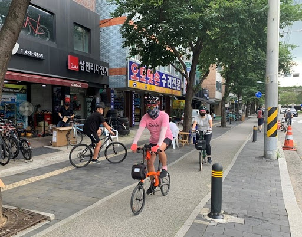

|  | |
|---|---|
| 이름 | 천호 자전거 거리 |
| 소재지 | 서울특별시 강동구 천호동(강변APT↔천호동공원사거리) |
| 설명 | 한강공원 광나루지구 입구에 위치한 거리. 지자체에서 조성한 특성화 거리는 아니고, 수년전부터 자전거 관련 가게들이 하나 둘 들어서면서 자연스레 형성되어 이제는 표지판까지 갖춘 곳이다. 한강 변에서도 가깝고 자전거 전용 도로도 잘 형성되어 있으며 20여 곳 이상의 자전거 관련 업체들이 모여 있기에 자전거를 좋아한다면 한번쯤 들러볼만한 명소이다. |
| 대중교통 | 지하철 : 8호선 암사역 3번 출구 |